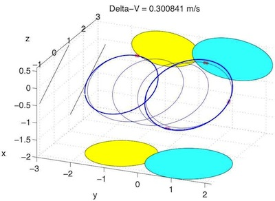
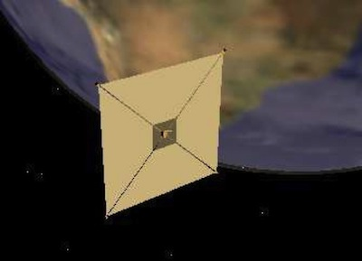
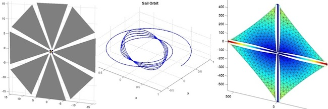
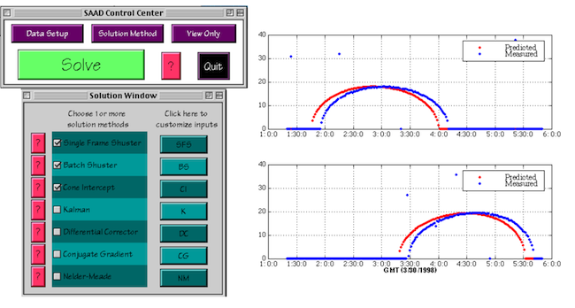
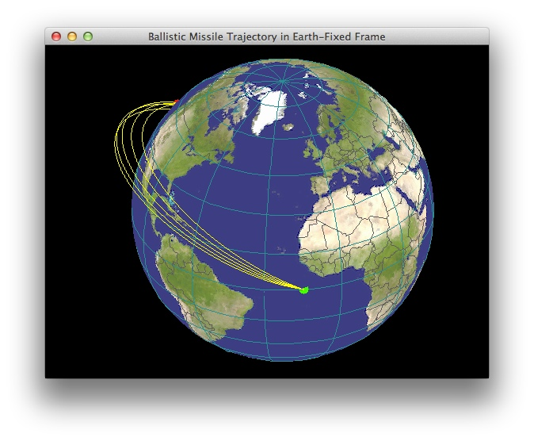

This software package was developed over the course of two SBIR contracts with NASA Goddard Space Flight Center. The scope of these contracts was to develop a reconfigurable, decentralized framework for autonomous guidance and control of large formations of spacecraft. The result was a prototype design for a decentralized formation flying (DFF) control system.
Formation flying is an essential capability for many future missions being planned at NASA, ESA and DoD. The Formation Flying Module provides a comprehensive and valuable set of tools for any organization embarking on such a mission. The collection of algorithms, simulations, and design tools offered in the Formation Flying Module is unparalleled in its depth and breadth.
- Tools for initializing, simulating, and visualizing spacecraft formations
- Algorithms for decentralized guidance and control
- Full support for both circular and eccentric orbits
- Coordinate transformations between the inertial frame and several relative frames
- A variety of models for relative dynamics, including:
- Clohessy-Wiltshire (or Hill's) equations
- Lawden's equations
- Gauss' variational equations
- Formation design utilities, with a powerful GUI
- Decentralized optimal guidance routines
- Model Predictive Control (MPC) algorithms for optimal maneuver planning
- Collision monitoring and avoidance utilities
- Fully integrated simulation including decentralized guidance and control software, inertial frame state integration, user-defined time-tagged command scripts, and post-simulation analysis tools

The Optical Navigation System (ONS) is a flexible navigation system for deep space operations that does not require GPS measurements. The navigation solution is computed using an Unscented Kalman Filter (UKF) that can accept any combination of range, range-rate, planet chord width, landmark and angle measurements using any celestial object. The UKF employs a full nonlinear dynamical model of the orbit including gravity models and disturbance models.
The package also includes attitude determination algorithms using the UKF algorithm with the IMU. This makes the sensor a more capable plug-in replacement for a star tracker thus reducing the integration and test cost of adding this sensor to a spacecraft. The IMU is used as the dynamical base for the attitude determination algorithms. That is, the gyros model is propagated, not the spacecraft model. The linear accelerometers are used to measure forces on the spacecraft. This permits accurate measurement of the accelerations applied by thrusters during maneuvers.
The Optical Navigation Module comes with complete demonstrations of optical navigation in Earth orbit, cis-lunar space, during lunar landings and in deep space. Unscented Kalman Filter and Extended Kalman Filter functions are used to implement your estimator. Both recursive and single frame solutions are available. ONS can be integrated with the toolboxes stellar attitude determination system for a complete attitude and position determination solution. The toolboxes include ephemerides for the planets and asteroids making it easy to simulate any mission. The toolbox also includes neural networks for two-dimension position determination using images.
The module requires MATLAB's Deep Learning toolbox for neural net implementation.
The Solar Sail Module was added to the version 7 release of the Spacecraft Control Toolbox. PSS has been developing sail control, analysis and simulation software since 2004 for both NASA's In-Space Propulsion program and the SBIR program. Our high-fidelity disturbance model enables users to simulate complex sail shapes without resorting to analytical approximations. You can study the nonlinear effects of different sail material properties and propellantless actuation schemes. The combination of these special sail CAD and dynamics models with control design tools from the core toolbox provide a complete sail attitude and orbit control analysis solution!
- Propellantless attitude control with vanes, moving mass, and rotating boom
- Simulations of integrated guidance and attitude control
- Sail disturbance function with combined optical and thermal force model
- Design examples such as Cosmos-1, striped square sail, billowed circular sail
- Mission examples such as Solar Polar Imager, heliopause probe, and geocentric kite
- Deployment dynamics with time-varying inertia
- Locally optimal guidance laws for geocentric and heliocentric orbits
- Numerical trajectory optimization using simplex, genetic algorithms, and simulated annealing


The Spin Axis Attitude Determination Module (SAAD), for use with the Spacecraft Control Toolbox, provides you with a complete set of tools needed to perform spin-axis attitude determination using horizon sensor and sun sensor measurements. Spin-axis attitude determination requires at least one horizon sensor and one single-axis sun sensor.
SAAD makes extensive use of the MATLAB® graphics capabilities, which makes analyzing your data an easy task. Plots of measurement data make evaluating data quality and effectiveness of data culling a snap. You can also see how well the measured data matches predictions before and after solutions. Solutions are also presented numerically (as errors and residual statistics) for all of the solution methods.
The SAAD Package can process any combination of data that is available on your system. It accepts horizon sensor inputs as either leading and trailing edge times or as dihedral angles. Midscan, leading or trailing dihedral angles are handled with equal ease. The data can even be processed without dihedral angles or without chordwidths.
We have used this package operationally on four missions for three different types of spacecraft with excellent results! On the most recent mission our predictions, from all of our algorithms, matched post apogee burn attitude predictions to within two tenths of a degree and better than the customer's software.
- Spin-Axis attitude determination
- Spinning transfer orbit operations
- Verification of in-house software
- Verifying customer results during mission operations
- What-if studies
- Differential-corrector, Conjugate Gradient and Nelder-Meade attitude determination algorithms
- Iterated extended Kalman Filter for real-time applications
- Cone intercept, and chordwidth/dihedral angle attitude determination methods
- Singular value decomposition least squares solver for ill-conditioned data
- Data quality evaluation tools
- Horizon sensor dynamics models
- Graphical user interface that frees you from coding

The Launch Vehicle Toolbox (LVT), for use with MATLAB®, provides a wide range of utilities to support launch vehicle sizing, design, and performance analysis. LVT is composed of SCT, ACT and the Launch Vehicle add-on module. This toolbox has been used by Princeton Satellite Systems to develop our two stage to orbit (TSTO) vehicle concept: Space Rapid Transit. The screenshot below shows several sub-orbital trajectories of different flight times. Each trajectory is simulated using a full non-linear dynamic model of a multi-stage vehicle, guided during the boost phase to reach a target velocity for reentry at specified coordinates.
- Launch window planning
- Launch vehicle sizing for early mission concept studies
- Orbit insertion trajectory design
- Analysis of sub-orbital missile range and altitude capabilities
- Reentry dispersion analysis
- Multi-stage vehicle point-mass models for boost phase simulations
- User-interactive GUI for developing direct and indirect launch trajectories
- Newtonian aerodynamic model for hypersonic speeds
- Non dimensional reentry dynamics model (Shen and Lu, 2007)

The Target Tracking Module provides a fast new implementation of Track-Oriented Multiple Hypothesis Testing (MHT) that provides robust and reliable results across different problem domains. Track-Oriented MHT is a powerful technique for assigning measurements to objects when the number of objects is unknown or changing. It is absolutely essential for accurate tracking of multiple objects such as in rush hour traffic.
The Target Tracking Module uses a powerful new track pruning algorithm that does the track pruning in one step. Because of its speed, ad-hoc pruning methods are not required, leading to more robust and reliable results. The track management software is, as a consequence, quite simple. The module leverages the open-source GLPK library for fast and reliable optimization. Kalman Filters and Interactive Multiple Models (IMM) are included with the Core Control Toolbox.